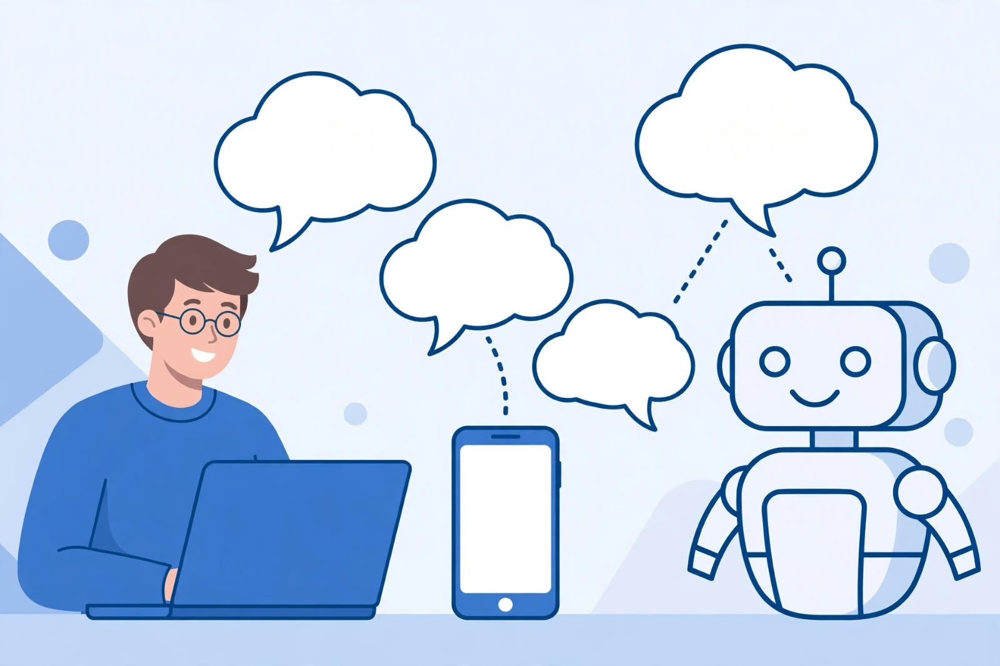

الاسم: زينب صلاح علي البحيري
السكشن: 68
الرقم الجامعي: 2502834
المقرر: تطبيقات الإنترنت والمنصات الإلكترونية - Task 2
في السنوات الأخيرة أصبحت دردشة الروبوتات من أهم تطبيقات الذكاء الاصطناعي في حياتنا اليومية. فعندما ندخل إلى موقع شركة أو تطبيق بنك أو متجر إلكتروني، نجد نافذة محادثة ترد علينا فوراً وتقول: "مرحباً، كيف يمكنني مساعدتك؟"
هذه النافذة ليست إنساناً، بل هي روبوت ذكي قادر على فهم أسئلتنا والرد علينا في ثوانٍ. لذلك أصبحت روبوتات الدردشة تستخدم في كل المجالات تقريباً، لأنها تعمل 24 ساعة بدون توقف، وتوفر الوقت والجهد على الإنسان.
دردشة الروبوتات أو Chatbot هي برنامج ذكي يعتمد على الذكاء الاصطناعي ومعالجة اللغة الطبيعية، تم تصميمه ليحاكي المحادثة البشرية. فهو يستقبل سؤال المستخدم، ويحلله ويفهمه، ثم يبحث عن أفضل إجابة في قاعدة البيانات الخاصة به، ويرد عليه سواء كان نص أو صوت أو صورة.
بدأت فكرة الروبوتات منذ عام 1966 مع أول روبوت اسمه ELIZA، ثم تطورت بشكل كبير حتى وصلنا اليوم إلى روبوتات مثل ChatGPT و Gemini و Copilot التي تستطيع كتابة المقالات وحل المسائل وترجمة النصوص وتلخيص الكتب.
تعمل روبوتات الدردشة من خلال 3 خطوات أساسية: الفهم حيث تحلل سؤال المستخدم، ثم البحث عن الإجابة في قاعدة البيانات، ثم الرد على المستخدم بشكل واضح وسريع. وكلما تحدث المستخدم مع الروبوت أكثر، كلما تعلم الروبوت أكثر وأصبحت إجاباته أدق.

تستخدم روبوتات الدردشة في خدمة العملاء للرد على العملاء طوال اليوم، وفي التعليم لمساعدة الطلاب في الشرح وحل الواجبات، وفي الطب لحجز المواعيد والرد على استفسارات المرضى، وفي التجارة الإلكترونية لاقتراح المنتجات ومتابعة الطلبات، وفي البنوك لمعرفة الرصيد وتحويل الأموال.
كما أنها تساعد الشركات في تقليل التكلفة، وتخدم عدد كبير من المستخدمين في نفس الوقت، وتحسن تجربة المستخدم بشكل كبير.
من مميزاتها أنها تعمل 24 ساعة، وردها سريع وفوري، وتتكلم بأكثر من لغة. ومن عيوبها أنها قد لا تفهم بعض الأسئلة المعقدة، ولا تشعر بمشاعر الإنسان، وقد تعطي إجابات خاطئة أحياناً إذا كانت البيانات غير صحيحة.
| النوع | الوصف | مثال | الاستخدام |
|---|---|---|---|
| روبوت القواعد | يرد بإجابات محددة مسبقاً | روبوت الأسئلة الشائعة | المواقع البسيطة |
| روبوت الذكاء الاصطناعي | يفهم ويتعلم من المحادثة | ChatGPT - Gemini | التعليم والكتابة |
| روبوت الصوت | يتعامل بالصوت بدل النص | Siri - Alexa | الهواتف والمنازل الذكية |
| روبوت التجارة | يساعد في الشراء ومتابعة الطلبات | روبوت المتاجر الإلكترونية | التسوق الإلكتروني |
في النهاية، نستنتج أن دردشة الروبوتات أصبحت من أهم الابتكارات التكنولوجية في العصر الحديث، لأنها سهلت التواصل بين الإنسان والآلة، ووفرت الوقت والجهد، وحسنت جودة الخدمات في كل المجالات.
ومع التطور المستمر في الذكاء الاصطناعي، ستزداد قدرات هذه الروبوتات يوماً بعد يوم، وسيصبح دورها أكبر في حياتنا اليومية. لذلك يجب علينا أن نتعلم كيف نستخدمها بشكل صحيح ومسؤول، ونستفيد منها في تطوير أنفسنا ومجتمعنا.
تم إعداد هذا العمل بواسطة: زينب صلاح علي البحيري - سكشن 68 - 2502834